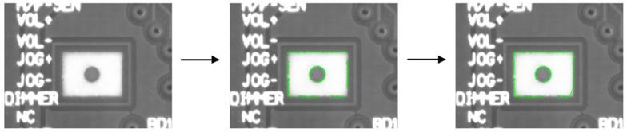

|
类型 |
轮廓 |
|
描述 |
连接端点相近的轮廓。 如果当前轮廓与多个轮廓都可连接，首先考虑连接距离最近的轮廓； 如果多个轮廓的距离都相同，首先考虑连接最长的轮廓。 输出轮廓均是顺时针方向 别名：ZV_ContUnionAdj |
|
语法 |
ZV_ContUnionAdjacent(src,dst,mode,maxDist)
参数： src：ZVOBJECT类型，列表类型，输入，不支持多边形属性的轮廓 dst：ZVOBJECT类型，列表类型，输出，与输入属性相同 mode：1-首尾端点加入考虑，即当前轮廓端点与另一条轮廓端点的距离小于另一条轮廓首尾端点距离时才会发生连接；0-不检测首尾；建议为0模式 maxDist：两轮廓满足最近连接的最大距离 |
|
适用控制器 |
支持ZV功能或者5系列以上的控制器 |
|
例子 |
 ZVOBJECT img,img_bw,re,cont_list,cont_dst ZV_ImgRead(img,"count3.bmp",0) '读取图片 ZV_ReGenRect(re,211,175,247,197) '生成矩形区域 ZV_ContGenSubPix(img,re,cont_list,5,10,35) '生成亚像素轮廓 ZV_ContUnionAdjacent(cont_list,cont_dst,1,70) '近邻轮廓连接
' 绘制结果 ZVOBJECT dst ZV_ImpGrayToRgb(img,dst) '灰度图转彩色图 ZV_DraContList(dst,cont_dst,ZV_DraColor(0,255,0),0)'绘制轮廓 |